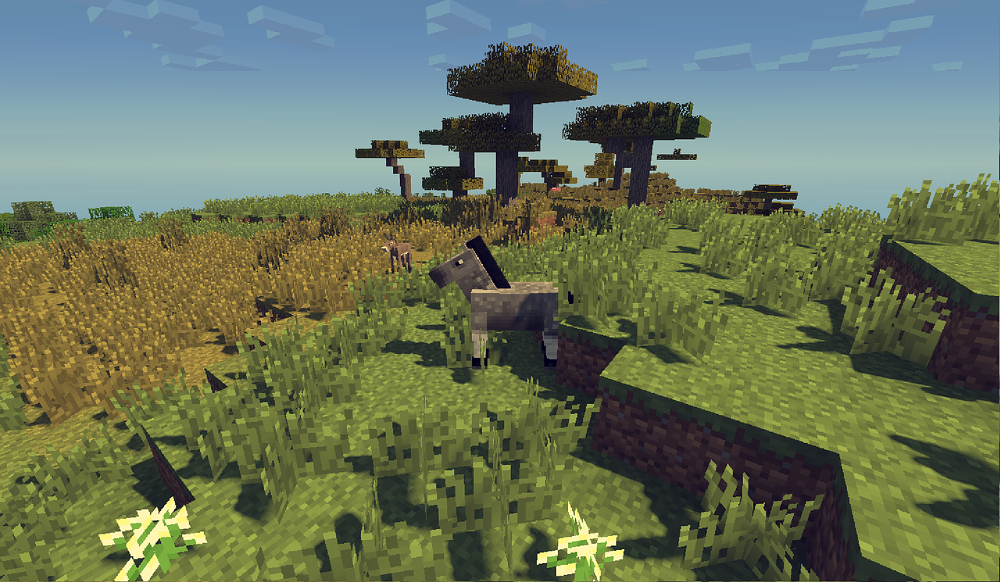
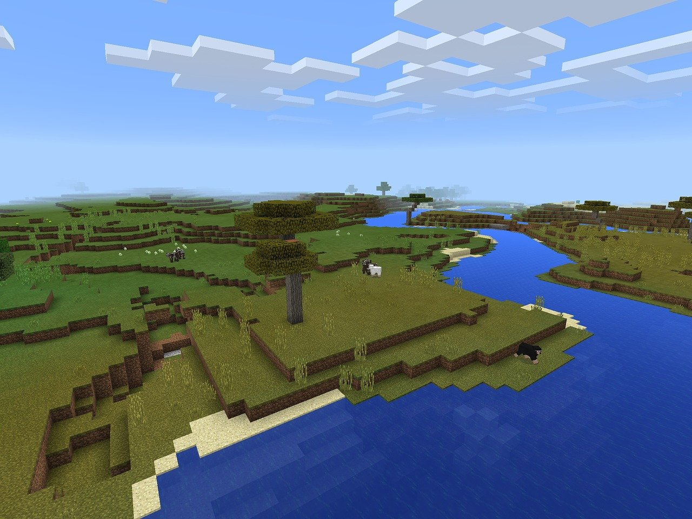

Ukratko
Majnkraft je video-igra koju je napravio švedski programer Markus Person poznatiji kao Noč i njegova kompanija Mojang.
Pojavila se u prodaji 17. maja 2009. U igri je sve izgrađeno od kockastih blokova, a igrač u njoj može slobodno da se kreće.
Primer slika iz igrice

Na prvoj slici vidimo kucu koju je igrac sagradio
Ima i raznih zivotinja
kao i razlicitih bioma